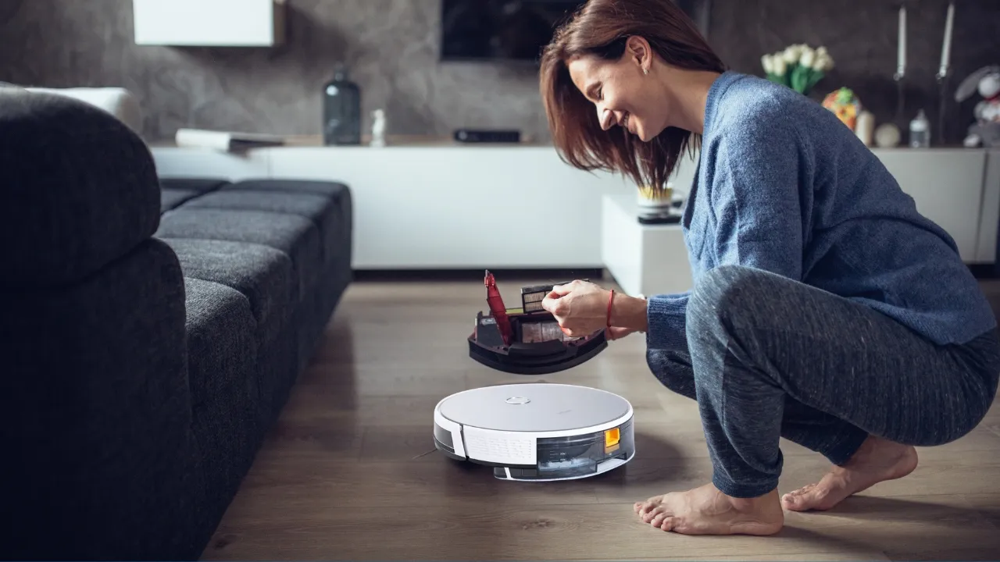

Smart Recycling Bins
- Use camera technology and sensors to identify materials
- Inform you whether it belongs in the recycling bin
- Compress trash and monitor fill levels, communicate with waste collection services to optimise pickup routes
- Distinguish compostable materials from recyclables
- Help divert organic waste for composting and reduce contamination
- Requires responsible sourcing and considerations, but has the potential to make recycling more efficient and promote sustainability
AI Cleaning Robots
AI-powered household robots are rapidly advancing from science fiction to practical tools capable of performing various chores.
Examples include the NEO Home Robot, a $20,000 humanoid that can make coffee and fold clothes, with remote human operators providing guidance when needed.
Figure's service robots are designed to navigate homes and complete multi-step tasks like cleaning, making beds, and preparing simple meals.
Modern domestic robots utilize sophisticated "Embodied AI," allowing them to perceive their environment using cameras, LiDAR, and deep learning algorithms.
These robots recognize objects such as clothing or dishes and interact with them through human-like hands or arms for efficient domestic assistance.

